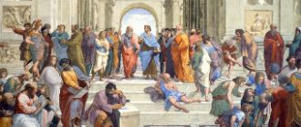

孙：梦中人 熟悉的脸孔孙：你是我守侯的温柔孙：就算泪水淹没天地 我不会放手孙：每一刻 孤独的承受孙:只因我曾许下承诺合:你我之间熟悉的感动 爱就要苏醒韩:问世苍生惟有爱是永远的神话韩:潮起潮落始终不会尘埃的相约
О, Москва, ты - жемчужина светлой великой страныИ в тебя, уж поверь, невозможно никак не влюбиться.Все широты твои, как сокровища рая, ясны,
Припев:У мамы дома на кухне, так хорошо. Мы посидим, поговорим с ней, о чем-то неважном. Папа пришёл. У, мама, если б ты знала, о ком я молчу,
Είχες μια καρδιά να ζει για σέναΦταίω που πίστεψα εσένα ξανάΕίχες τα φτερά μου τσακισμέναΌνειρα φυλακισμένα καλά
Пусть будут яркими дороги,Которые нам предстоит пройти.Пусть не встречаются тревогиНа нашем жизненном пути.
Светлоликая жрица искусства дворянских кровей,Чей сияющий образ и в толще времён не померкнет.Сколько сложено песен на добрую память о ней,
Платон сказал: первичен мир идей,В них - знание, а прочее - лишь мненья,Что обольщают мир неясной теньюВ привычной перемене дольних дней.

Наставник Македонского царя,Учивший Александра стоицизму,Стремившийся рукой поводыряВоенной страсти усмирить харизму,
30.04.2016г.
22.10ч.
Скольких созидает -
Есть где-то выше Бог,
И порядочность вознаграждает -
О, что за режиссер явил нам чудо,Веселый новогодний карнавал!Как будто он пришел из ниоткуда, Улыбкой и иронией спасал.
Поздравляю тебя в славный день февраля,Мой отважный защитник Отчизны.Знай, гордится тобою родная земля,Труд геройский твой ценен и признан.
Валентинов деньВ кафе играют старый джаз,На столике мерцают свечи,И эта музыка для насЗвучит в февральский, снежный вечер.
Мое прекрасное созданье! Мой ослепительный герой!Души моей очарованье! Мой ненаглядный, милый мой!Когда с тобою повстречались, еще не знала я тогда,
Things haven't been the sameSince you came into my lifeYou found a way to touch my soulAnd I'm never, ever, ever gonna let it go
[Bridge:]
А я уже давно потерял счёт дням -Сколько их прошло уже не знаю и сам.И почти не жду, что найду ответ -Ты была реальна или это мой бред?
Профессий много в государстве,
И все в почете и цене,
Но есть стезя лишь для отважных
Таких, кто верен всей стране.
Ледяной ветер в спину ударит,Ветер разлуки поможет проснуться.Нежный твой голос меня не обманет,Ты не заставишь меня оглянуться.
В один простой ноябрьский день,Десятого числа,Средь новорожденных детейВ наш мир пришла звезда.
Весёлая девчонка с тонким станом,Она вошла в советское искусство,Любовь дарила зрительному залу,И было обоюдным это чувство.
Feeling like I'm breathing my last breathFeeling like I'm walking my last stepsLook at all of these tears I've wept